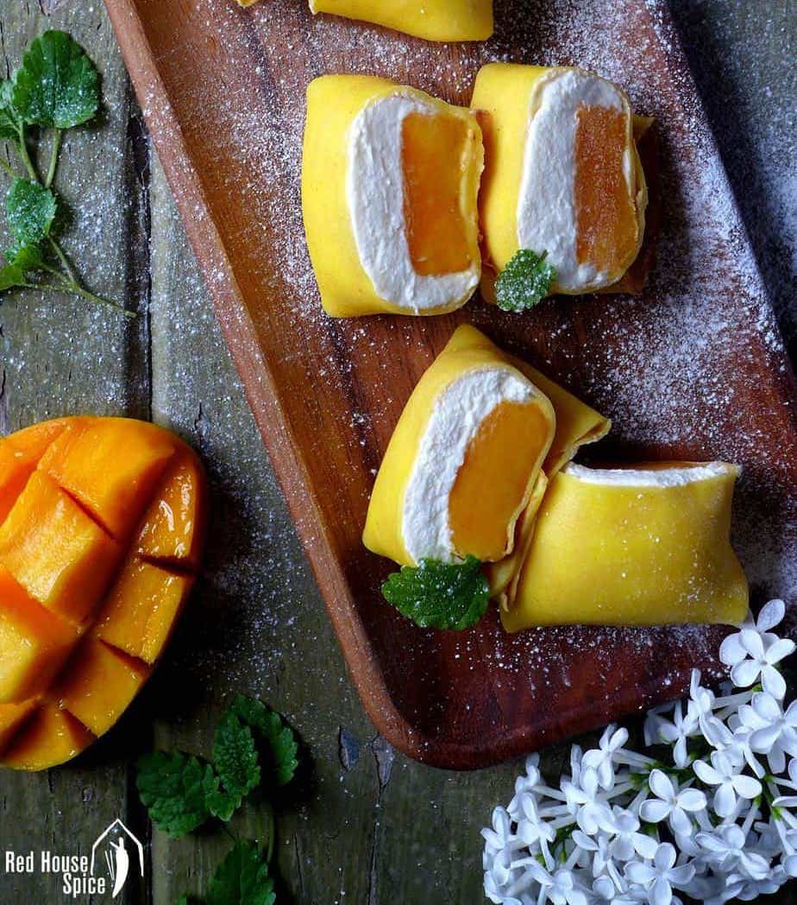

Back to Homepage
Mango Pancakes

Description
The recipe below should not be used as an actual recipe.
The full recipe referenced (and heavily paraphrased) in this webpage can be found at: https://redhousespice.com/mango-pancake/.
Ingredients
For Pancakes:
- Medium Eggs (3)
- All-Purpose Flour (50 grams)
- Corn Starch or Custard Powder (30 grams)
- Icing Sugar (25 grams)
- Melted Butter (2 teaspoons)
- Milk (240 mL)
For the Filling:
- Large Mango, peeled and cut into chunks (2)
- Icing Sugar (1/2 tablespoon)
- Vanilla Extract (1/2 teaspoon)
- Whipping Cream (300 mL)
Steps
- Pour the milk into a bowl. Sift in the flour, corn starch (or custard powder), and icing sugar. With a balloon whisk, mix the ingredients until they are combined well.
- Add and mix the melted butter and lightly beaten eggs.
- Pour the mixture via a sieve into a measuring cup or another bowl.
- Heat a pan over low heat.
- After pouring a small bit of batter onto the pan, swirl it quickly to form a thin disk.
- Transfer the pancake from the pan to a plate to cool when small air pockets appear under it. There is no need to cook the other side.
- Repeat Steps 4 to 6 until the batter is all used up.
- Whip the cream with vanilla extract and icing sugar. Stop when stiff peaks form.
- Lay a pancake with its smooth and clear side facing down on a flat surface.
- Before placing a piece of mango on top, spoon whipped cream onto the middle of the pancake.
- Fold the pancake from four sides into a shape resembling a pillow.
- Serve with the folded-side down. It is recommended to serve after refrigerating for approximately 30 minutes.